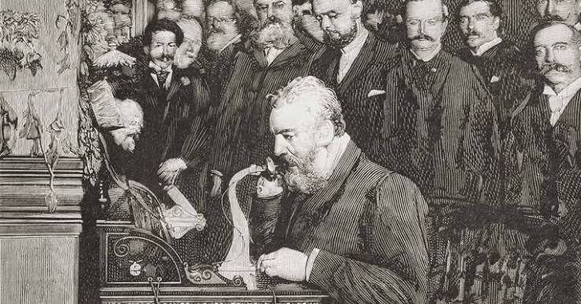
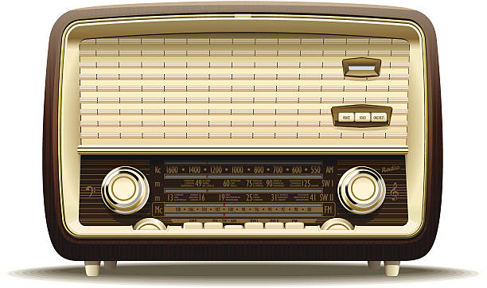

Antes de sumergirnos en la historia, te estaras preguntando por el nombre del título. Este recibe este curioso nombre debido a la historia de la invención del teléfono celular, ya que su creación no fue un projecto independiente.
¿A qué me quiero referir? A que, para que el télefono celular pudiera crearse, primero tuvieron que desarrollarse otros projectos e inventos importante. Entre ellos destacan es el télefono y radio, ya que el teléfono celular combina características de estos dos inventos.
Entonces, en este apartado vamos a contarte la historia de la radio y teléfono, o como dice el titulo "Papá y mamá".
comenzemos con papá.

el telefono (del griego tele, "lejos", y phoné, "sonido") la invecion del telefono se remonta en el siglo XIX, una epoca donde el entusiasmo por la inversion de nuevos artefactos, influenciados por la Revolucion Industrial, en que numerosos cientificos buscaban mejorar o reinventar el sistema de telegrafía.

La invención del teléfono estuvo envuelta durante mucho tiempo en una polémica, ya que se le atribuyó al inventor estadounidense Alexander Graham Bell (1847-1922), quien en realidad fue el primero en patentar el invento, y en ocasiones también a Elisha Gray (1835-1901), quien diseñó un teléfono de agua en 1876. Sin embargo, en 2002, la Cámara de Representantes de Estados Unidos reconoció a través de su resolución 269 las contribuciones del ingeniero italiano Antonio Meucci (1808-1889) al desarrollo del teléfono.

El teléfono nació bajo el nombre de “teletrófono” en 1854, en el taller del ingeniero italiano Antonio Meucci. Este inventor tenía una esposa inmovilizada por el reumatismo, y deseaba construir un aparato que le permitiera comunicarse con ella desde su oficina, en la planta baja de su vivienda, pues ella estaba en las habitaciones del piso superior. Aunque tuvo éxito en crear un aparato como el que buscaba, en ese momento decidió no patentarlo, pues carecía de dinero suficiente, y prefirió apostar por otras invenciones que consideró más prometedoras y rentables.
Ahora que haz leido un poco de la historia del telefono te preguntaras que atribullo este dispositivo a la invencion del telefono celular, pues aqui tienes algunos elementos del telefono que hicieron posible la creacion del telefono celular.
Y eso seria todo de parte de la historia del telefono, ahora vamos con mama (la radio).

La invencion de la radio tiene una relacion estrecha con la conprensión del campo electromagnético a la mano de los fisicos de la Royal Society británica del siglo XIX, tales como James Clerk Maxwell (1831-1879). Maxwell fue el primero en formular una teoría del funcionamiento de la radiación electromagnética, en palabras sencillas, del modo en que las ondas electromagnéticas se propagan por el espacio, incluso en el vacío.
Gracias a estos descubrimientos, en 1888 el físico alemán Heinrich Rudolf Hertz (1857-1894) demostró que dichas ondas electromagnéticas podían detectarse y crearse artificialmente, y diseñó un primer modelo de emisores y receptores de ondas.
Basándose en estas exitosas experiencias, el inventor italiano Guillermo Marconi (1874-1937) diseñó el primer sistema de telegrafía inalámbrica que usaba las ondas hertzianas para enviar y recibir impulsos, de modo tal que pudieran ser interpretados con el código morse.
Es importante notar, sin embargo, que invenciones similares se desarrollaban en otras latitudes, por lo que también se reconoce como inventores de la radio en sus respectivos países a Aleksandr Stepánovich Popov (1859-1906) en Rusia y a Nikola Tesla (1856-1943) en Estados Unidos.
En los primeros años del siglo XX, la invención del diodo y el triodo permitió no solo detectar las ondas electromagnéticas sino también amplificarlas.
Hasta que, poco después, en diciembre de 1906, se produjo la primera emisión de sonido por radio de la historia: su responsable fue el científico canadiense Reginald Fessenden (1866-1932), quien transmitió media hora de música y conversación de manera abierta, empleando un alternador electromagnético de alta frecuencia.
Bueno hasta aqui de parte de la historia de la radio, ahora te preguntaras que elementos involucran la radio con el telefono celular, estos son algunos de ellos.
Y bueno ya entediste porque el titulo de esta secion se llama asi, ya que basicamente si lo vemos de una forma metaforica el telefono y la radio son mama y papa ya que la arquitectura del telefono celular se compone de estos dos, tambien cabe aclarar que despues pasaran las primeras generaciones de telefonos, tambien estos adquirieron parte de las coputadoras pero esto lo dejaremos para otra seccion.